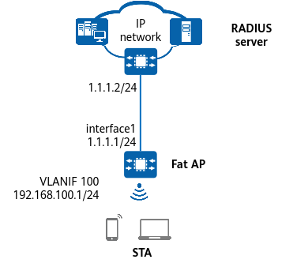

Example for Configuring a WPA3-802.1X Security Policy (Fat AP)
Networking Requirements
Without a proper security policy deployed, a WLAN may be exposed to security risks due to its openness. To meet the enterprise's high security requirements, you can configure a WPA3 security policy, 802.1X authentication, and AES encryption, and use an RADIUS server to authenticate identities of STAs. The AC must be configured to work in EAP relay mode, so the AC can support various 802.1X authentication protocols. For details about the basic networking example, see WLAN STA Management Configuration.


In this example, interface1 represents MultiGE0/0/0.
Table 1 provides an example of data planning.
Item |
Data |
|---|---|
RADIUS server |
Name of the RADIUS server template: radius1; server address: 10.23.200.1; authentication port number: 1812; accounting port number: 1813; shared key: YsHsjx_202206; authentication scheme: RADIUS; accounting scheme: RADIUS |
Service VLAN for STAs |
VLAN 100 |
DHCP server |
Fat AP functioning as a DHCP server to assign IP addresses to STAs |
IP address pool for STAs |
VLANIF 100: 192.168.100.2–192.168.100.254/24 |
AP management information |
|
Regulatory domain profile |
|
SSID profile |
|
Security profile |
|
VAP profile |
|
Configuration Roadmap
- Configure RADIUS authentication parameters and bind them to an authentication domain.
- Configure an 802.1X access profile to manage 802.1X access control parameters.
- Configure an authentication profile and bind it to an 802.1X access profile and the authentication domain.
- Configure STA access services so that STAs can access the WLAN properly.
- Configure a WPA3 security policy using 802.1X authentication and AES-GCM encryption in a security profile.
Procedure
- Configure RADIUS authentication parameters.
Ensure that the RADIUS server address, port number, and shared key are correctly configured and are the same as those on the RADIUS server.
# Create a RADIUS server template.
<HUAWEI> system-view [HUAWEI] sysname FAT AP [FAT AP] radius-server template radius1 [FAT AP-radius-radius1] radius-server authentication 10.23.200.1 1812 [FAT AP-radius-radius1] radius-server accounting 10.23.200.1 1813 [FAT AP-radius-radius1] radius-server shared-key cipher YsHsjx_202206 Warning: The shared-key complexity is low. It is recommended that the password contain at least sixteen characters and be a combination of at least two of the following categories: Uppercase letters <A-Z>; Lowercase letters <a-z>; Numerals <0-9>; Symbols (all characters not defined as letters or numerals), such as !, $, #, and %. Continue? [Y/N]:y Info: The shared key is not automatically negotiated by the two communication parties, please update the shared key periodically to prevent key leakage. [FAT AP-radius-radius1] quit
# Configure an authentication scheme that uses RADIUS authentication.[FAT AP] aaa [FAT AP-aaa] authentication-scheme scheme1 [FAT AP-aaa-authen-scheme1] authentication-mode radius [FAT AP-aaa-authen-scheme1] quit
# Configure an accounting scheme that uses RADIUS accounting.
[FAT AP-aaa] accounting-scheme scheme2 [FAT AP-aaa-accounting-scheme2] accounting-mode radius [FAT AP-aaa-accounting-scheme2] accounting realtime 15 [FAT AP-aaa-accounting-scheme2] quit
# Create the authentication domain example.com and bind the authentication scheme, the accounting scheme, and the RADIUS server template to the authentication domain.
[FAT AP-aaa] domain example.com [FAT AP-aaa-domain-example.com] authentication-scheme scheme1 [FAT AP-aaa-domain-example.com] accounting-scheme scheme2 [FAT AP-aaa-domain-example.com] radius-server radius1 [FAT AP-aaa-domain-example.com] quit [FAT AP-aaa] quit
- Configure a route from the Fat AP to the server (assume that the IP address of the upstream device connected to the Fat AP is 1.1.1.2).
[FAT AP] ip route-static 10.23.200.0 255.255.255.0 1.1.1.2
- Configure the 802.1X access profile d1.
By default, an 802.1X access profile uses EAP authentication. Ensure that the RADIUS server supports the EAP protocol. Otherwise, the RADIUS server cannot process 802.1X authentication requests.
[FAT AP] dot1x-access-profile name d1 [FAT AP-dot1x-access-profile-d1] quit
- Configure the authentication profile p1, bind the 802.1X access profile to the authentication profile, and specify a forcible authentication domain.
[FAT AP] authentication-profile name p1 [FAT AP-authentication-profile-p1] dot1x-access-profile d1 [FAT AP-authentication-profile-p1] access-domain example.com force [FAT AP-authentication-profile-p1] quit
- Configure WLAN service parameters.
# Create the security profile wlan-security and set the security policy to WPA3-802.1X.
[FAT AP] wlan [FAT AP-wlan] security-profile name wlan-security [FAT AP-wlan-sec-prof-wlan-security] security wpa3 dot1x gcmp256 Warning: This action may cause service interruption. Continue? [Y/N]:y Info: PMF must be mandatory when security policy is WPA3-SAE, WPA3-802.1x, OWE or SEW-CERT. [FAT AP-wlan-sec-prof-wlan-security] quit
# Create the SSID profile wlan-ssid and set the SSID name to wlan-net.
[FAT AP-wlan] ssid-profile name wlan-ssid [FAT AP-wlan-ssid-prof-wlan-ssid] ssid wlan-net [FAT AP-wlan-ssid-prof-wlan-ssid] quit
# Create the VAP profile wlan-vap, set the service VLAN, and bind the security profile and SSID profile to the VAP profile.
[FAT AP-wlan] vap-profile name wlan-vap [FAT AP-wlan-vap-prof-wlan-vap] service-vlan vlan-id 100 Warning: This action may cause service interruption. Continue? [Y/N]:y [FAT AP-wlan-vap-prof-wlan-vap] security-profile wlan-security Warning: This action may cause service interruption. Continue? [Y/N]:y [FAT AP-wlan-vap-prof-wlan-vap] authentication-profile p1 Warning: This action may cause service interruption. Continue? [Y/N]:y [FAT AP-wlan-vap-prof-wlan-vap] ssid-profile wlan-ssid Warning: This action may cause service interruption. Continue? [Y/N]:y [FAT AP-wlan-vap-prof-wlan-vap] quit
# Bind the VAP profile wlan-vap to radios 0 and 1 of the AP with the ID of 0.
[FAT AP-wlan] ap-id 0 [FAT AP-wlan-ap-0] vap-profile wlan-vap wlan 1 radio 0 Warning: This operation will delete radio0's VAP in active state and make users offline, continue? [Y/N]:y [FAT AP-wlan-ap-0] vap-profile wlan-vap wlan 1 radio 1 Warning: This operation will delete radio1's VAP in active state and make users offline, continue? [Y/N]:y [FAT AP-wlan-ap-0] quit
Verifying the Configuration
# Run the display security-profile command to check information about a security profile.
[FAT AP] display security-profile name wlan-security ------------------------------------------------------------ Security policy : WPA3 802.1x Encryption : GCMP256 PMF : mandatory ------------------------------------------------------------ WPA's configuration PTK update : disable PTK update interval(s) : 43200 Group key negotiation : enable ------------------------------------------------------------ WAPI's configuration PKI realm : - Authentication server IP : - WAI timeout(s) : 60 BK update interval(s) : 43200 BK lifetime threshold(%) : 70 USK update method : Time-based USK update interval(s) : 86400 MSK update method : Time-based MSK update interval(s) : 86400 Cert auth retrans count : 3 USK negotiate retrans count : 3 MSK negotiate retrans count : 3 ------------------------------------------------------------
# Run the display vap all command to check the VAP authentication mode based on the Auth type field.
# Connect STAs to the WLAN with the SSID wlan-net. After the correct user name and password are entered on an 802.1X client, the STA is authenticated successfully and can access the WLAN.
Configuration Scripts
- FAT AP
# sysname FAT AP # vlan batch 100 # interface Vlanif100 ip address 192.168.100.1 255.255.255.0 dhcp select interface # interface VGE0/0/0 portswitch description Connected to built_in_ap port hybrid pvid vlan 4094 port hybrid tagged vlan 1 100 port hybrid untagged vlan 4094 # authentication-profile name p1 dot1x-access-profile d1 access-domain example.com force # dot1x-access-profile name d1 # radius-server template radius1 radius-server shared-key cipher %+%##!!!!!!!!!"!!!!"!!!!*!!!!Cd/`W03KjAwAqn64E<\TxGC_SOri<2BP\A+!!!!!2jp5!!!!!!B!!!!Oe2HMc->XMa#TLDZUaJBFJtm#XVj*E:S*|(N7`J1B:3QY!!!!!!!!!!!!!!!%+%# radius-server authentication 10.23.200.1 1812 weight 80 radius-server accounting 10.23.200.1 1813 weight 80 # aaa authentication-scheme scheme1 authentication-mode radius accounting-scheme scheme2 accounting-mode radius accounting realtime 15 domain example.com authentication-scheme scheme1 accounting-scheme scheme2 radius-server radius1 # ip route-static 10.23.200.0 255.255.255.0 1.1.1.2 # wlan security-profile name wlan-security security wpa3 dot1x gcmp256 ssid-profile name wlan-ssid ssid wlan-net vap-profile name wlan-vap service-vlan vlan-id 100 ssid-profile wlan-ssid security-profile wlan-security authentication-profile p1 ap-id 0 vap-profile wlan-vap wlan 1 radio 0 vap-profile wlan-vap wlan 1 radio 1 # return